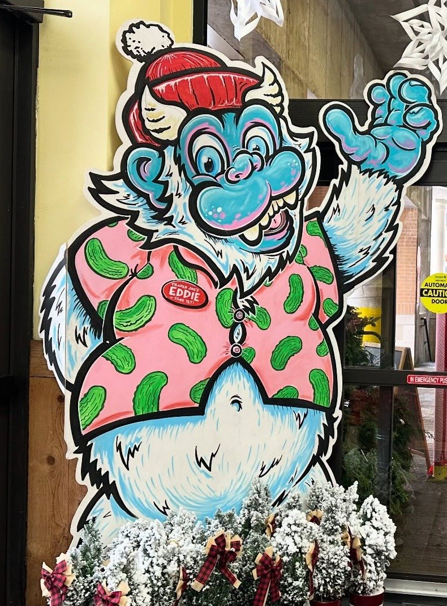
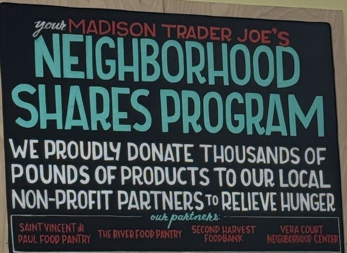
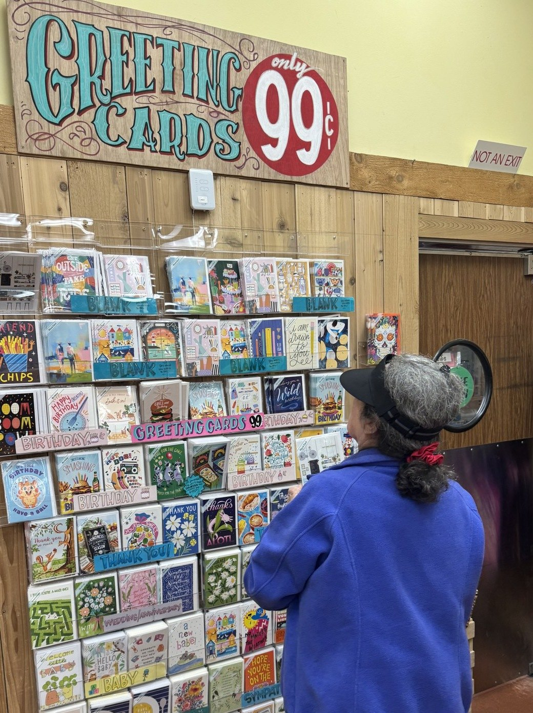
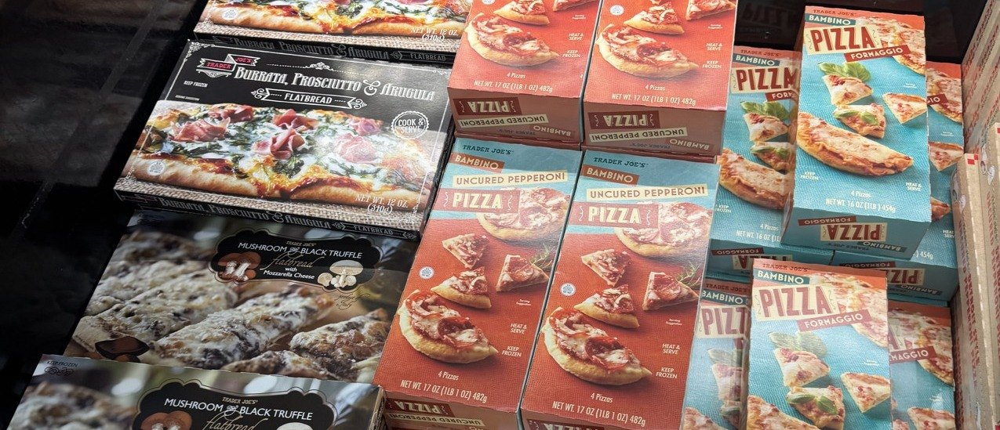
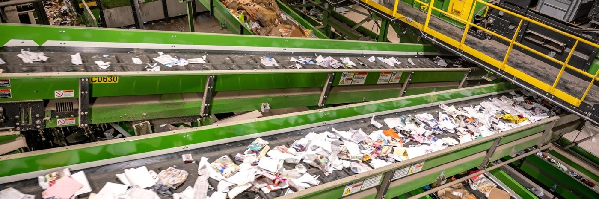
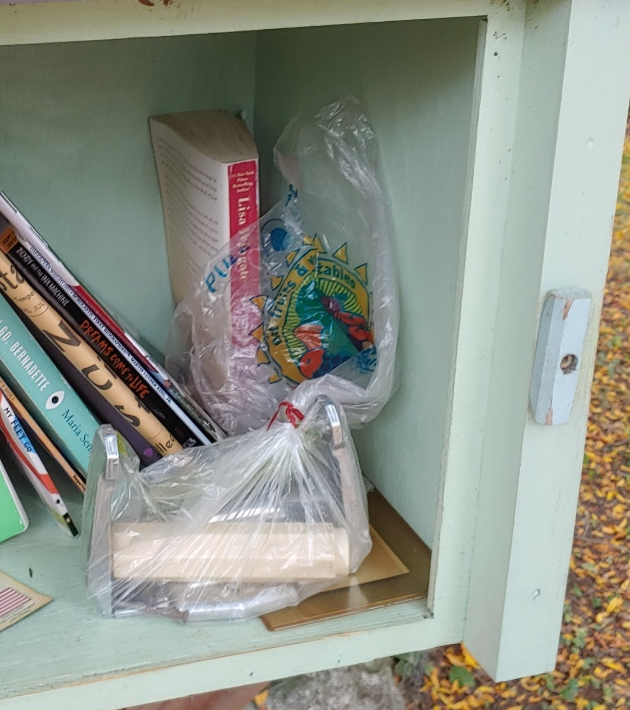

The Monroe Street TattlerThe 20th Anniversary Investigation
Trader Joe's celebrates 20 years on Monroe Street.
Behind the cheerful signs and Hawaiian shirts, an investigation reveals a shocking pattern.

The artwork is an inside job.
But before there was Trader Joe’s, there was chaos.
There is neither the time nor space here to fully report on how Trader Joe’s came to Monroe Street, so the official record has been condensed for brevity and a reasonable degree of historical accuracy.
There was Ken Kopp’s Neighborhood Grocery, then Walgreens tried to come and caused hysteria, then neighbors organized, then came a proposed neighborhood co-op, followed by years of redevelopment proposals, then Willy Street Co-op almost moved in, finally Trader Joe’s was approved, and then everyone immediately lost their minds for cookie butter.
On October 20, 2006, Trader Joe’s officially opened its doors on Monroe Street. Twenty years later, it’s difficult to imagine the neighborhood without it.
But anniversaries are no excuse to abandon journalistic scrutiny. Twenty years is a long time for any business to operate without someone asking a few uncomfortable questions.
And so, the Monroe Street Tattler launched an investigation.
The investigation initially showed promise. The Tattler’s website tip line received not one, but two complaints about the store’s new hours, including one particularly pointed submission: “Trader Joes New Hours Suck. They should not do this.”
The complaints arrived suspiciously close together, raising the possibility that our two sources were, in fact, one disgruntled neighbor.
Unfortunately, that was about as scandalous as things got.
What began as a search for dirt instead uncovered a rather alarming pattern of generosity, goodwill, and wholesome behavior.
As if we all needed any more reasons to love Trader Joe’s; we present our findings.
The Evidence: Secret Food Distribution Network Operating Inside Trader Joe’s

The evidence, painted right on the wall.
Thousands of pounds of food products are donated to local organizations working to relieve hunger. No food goes to waste.
The recipients currently include Saint Vincent de Paul Food Pantry, The River Food Pantry, Second Harvest Foodbank, and Vera Court Neighborhood Center.
And this is hardly a closely guarded secret. Inside the store, a painted sign announces their Neighborhood Shares Program, putting the evidence right on the wall for everyone to see.
A Flower Operation Hiding in Plain Sight
Our investigation uncovered a second distribution operation involving the previous day’s unsold flowers, which are donated to local senior living communities.
The transfers take place in broad daylight. Vans arrive, flowers are loaded, and the vehicles depart with little effort to conceal the operation.
Inside the store, a separate initiative known as the “Bucket of Sunshine” distributes flowers directly to shoppers.
Readers who witness these exchanges are advised to remain calm.
The Pumpkins Have Been Disappearing
The donation is consumed on site. Photo courtesy Henry Vilas Zoo
Every autumn, Trader Joe’s stocks its familiar assortment of pumpkins. But what happens to the ones nobody buys? The pumpkins are donated to Henry Vilas Zoo, where they become food for the animals.
“Yes! They gave us pumpkins this year and our animals loved them!” confirmed the zoo.
In fact, the zoo receives enough pumpkins from Trader Joe’s that it no longer accepts pumpkin donations from the general public.
A pumpkin that fails to make it onto someone’s front porch instead becomes lunch for a zoo animal. We now direct you, the reader, to the accompanying photograph, courtesy of the zoo, and ask: Have you ever seen anything so outrageously adorable?
The Artwork Is an Inside Job

Those 99-cent greeting cards? The artwork is created by employees too.
An investigation into the colorful signs and handwritten displays throughout Trader Joe’s led us to a tightly squeezed back room near the bathrooms, where the store’s artists work.
Our attempt to photograph the artists at work was swiftly intercepted. Not one, but two employees approached, both suspiciously eager to assist and redirect us toward the main store, away from the back room.
A classic attempt to distract the press, we suspect.
Further inquiries revealed the existence of another room, possibly adjoining the underground parking area. Unfortunately, access was not granted, despite the presentation of our homemade press badge.
What goes on behind these doors remains a mystery.
What we did establish is that the colorful signs, illustrations, and handwritten product cards throughout Trader Joe’s are created by actual local employees. Each store has its own artists, giving its displays a distinctly local character.
And the artistic operation extends well beyond the store walls.
Those 99-cent greeting cards? The artwork is created by national Trader Joe’s employees, too. Not outsourced to an outside design firm. Not generated by artificial intelligence. Actual employees creating original artwork for cards that sell for less than a dollar.
All this artistic talent, devoted to selling groceries and wishing people a happy birthday.
They’ve Been Here All Along
Seven employees who were hired when the Monroe Street Trader Joe’s opened in 2006 are still working there twenty years later, alongside many other longtime employees.
They’re the familiar faces who remember your name, ask about your kids or pets, and somehow make a national grocery chain feel like a neighborhood store. They offer recommendations, strike up conversations, and bring a little warmth to what might otherwise be an ordinary grocery run.
The products may come and go, but it’s the people behind the Hawaiian shirts who make Trader Joe’s a neighborhood institution.
Twenty Years Later
Twenty years ago, Monroe Street was embroiled in a rather spirited debate over what belonged on this corner of the neighborhood.
Today, it’s difficult to imagine the street without Trader Joe’s.
The Tattler had hoped to commemorate the occasion with a scandal. Instead, we find ourselves offering congratulations.
Happy 20th anniversary, Trader Joe’s. Thanks for being a great neighbor.
The Monroe Street TattlerThe Great Frozen Pizza Taste Test
The Neighborhood Puts Trader Joe's Pizza to the Test
Thirteen frozen pizzas, plenty of strong opinions, and a surprising winner.

Thirteen varieties made the cut.
Anyone who has wandered Woodman’s frozen pizza aisles knows Wisconsin takes frozen pizza seriously. A 2026 Instacart study found that Wisconsinites lead the nation in frozen pizza purchases per customer.
To celebrate Trader Joe’s 20th anniversary on Monroe Street, neighbors sampled its frozen pizzas, assigned scores, and submitted tasting notes to determine which deserve a place in our freezers.
Thirteen varieties made the cut, ranging from familiar pepperoni and cheese to more ambitious offerings featuring burrata, truffle, and cauliflower crust.
Trader Joe’s seemed to have a different selection available with every visit. Tasters followed the same scoring system, but cooking conditions varied across neighborhood kitchens. Oven temperatures, cooking times, and individual interpretations of a golden-brown crust were left entirely to participants. This was, after all, frozen pizza.
A Little Something for Everyone
Among the more successful offerings was the Detroit Style Uncured Pepperoni, which earned an average score of 6.8 out of 10. Its substantial crust earned praise, including one perfect score.
“This is actually an impressive Detroit Pizza. That’s not from Detroit,” wrote one admirer.
Another declared it good enough to pass for the real thing.
Tarte d’Alsace earned a respectable 6.6. Its thin, airy crust suggested possibilities beyond pizza night.
One recommended serving it as “cute appetizer slices not cut to look like pizza though. Almost like a gourmet cooked cracker bite.”
Another described the experience as having that “Ooh La La feeling.”
The Bambino Formaggio brought back memories of childhood microwave pizzas, including those served on metallic-coated paper trays. One participant returned for another bite out of nostalgia. Another felt it edged out microwave pizza but still preferred Tombstone or Red Baron.
The Organic Cheese and Tomato pizza fared little better in the excitement department. One taster called it “perhaps the most neutral unmemorable cheese pizza I’ve eaten.”
The Great Vegetable Divide
Perhaps no pizza divided the neighborhood quite like the Organic Roasted Vegetable.
Colorful zucchini and other toppings impressed some tasters. One awarded it a 9 out of 10, declaring, “You eat with your eyes and this is a stunner with the colorful veggies. My best bite so far.”
Another considered it an ideal weeknight dinner for one.
“Gross, wanted to spit it out,” wrote one participant.
“Fill the garbage,” suggested another.
One reviewer found it edible only after removing the zucchini, while another asked, “How did this make it to market?”
The pizza received scores ranging from 1 to 9, the widest spread of any variety evaluated. Its average settled at 4.4, though the enthusiastic minority may wish to appeal that result.
Some Less Successful Slices
The Mushroom & Black Truffle pizza finished at the bottom of the scored field, averaging just 3.4 out of 10.
Its earthy aroma earned some appreciation, with one participant describing the smell as “tantalizing.” Another thought it might work as an appetizer for New Year’s Eve.
But the mushroom-forward flavor proved difficult for several tasters. One described it as “A bit too earthy but I could eat it if I was starving (said from a not mushroom fan).”
The Bambino Uncured Pepperoni also struggled, earning a 3.8 average. Its pepperoni flavor was particularly disappointing.
“The pepperoni is like there was a pepperoni waved over the top of it and barely got a flavor of pepperoni,” observed one taster.
Another offered a considerably shorter assessment: “Never again.”
Meanwhile, the BBQ Chicken pizza drew praise for its aroma but less enthusiasm in its numerical scores, finishing with a 4.4 average. One participant suggested its most promising application might be as an edible candle.
A Common Complaint: Where’s the Salt?
Across the tastings, a common complaint emerged: not enough salt. Even otherwise well-received pizzas left tasters wishing for stronger flavors. One evaluation captured a particular frustration:
“All Trader Joe’s pizzas have a high sodium content, but don’t taste like they have enough salt. I’m confused.”
An unexpected complaint for a food not generally celebrated for its low sodium content, but a reminder that plenty of salt doesn’t necessarily produce a well-seasoned slice.
And the Boxes Could Use Some Work
Several tasters took issue with the packaging, describing faded photography, dated designs, and product names that were difficult to decipher.
“The box seems a little dated, in fact, the platter that the pizza is on on the box looks like it comes from 1970. And that is questionable.”
One participant felt the packaging was actively underselling the pizza inside: “The picture on the box does not do it justice. The picture is faded and looks decades old but the pizza is fresh and more colorful.”
For a store known for its distinctive packaging, it seems the frozen pizza department may have some catching up to do.
And the Winner Is...
The top-rated pizza turned out to be one of the least conventional entries in the freezer case.
Trader Joe’s Gluten Free Cheese Pizza with Cauliflower Crust took first place with an average score of 7.4 out of 10, based on ten scored evaluations, more than any other pizza in the test.
The response was remarkably enthusiastic, particularly among tasters who hadn’t expected much from a cauliflower crust.
“Wow - this is way better than I thought,” wrote one participant.
Another praised its crispness and cheesy flavor: “I immediately wanted more in my life. It has a lovely crunch followed by cheesiness.”
One taster didn’t even realize it was gluten-free, while another recommended serving it without revealing the cauliflower crust until after everyone had tasted it.
There was dissent. One participant awarded it a 3, describing the crust as cardboard. But with two perfect 10s and consistently favorable reviews, the cauliflower crust finished comfortably ahead of the competition.
The neighborhood has spoken.
Against considerable odds, a gluten-free cauliflower-crust pizza emerged victorious in a state that takes its frozen pizza very seriously.
The Neighborhood Pizza Honors
Based on scores and submitted tasting evaluations. All scores are out of 10.
Best in Show
Gluten Free Cheese Pizza with Cauliflower Crust
7.4 average · 10 evaluations
The overall winner, praised for its crispy crust, flavorful cheese, and ability to surprise even the skeptics.
Outstanding Achievement in Detroit Style
Detroit Style Uncured Pepperoni
6.8 average · 5 evaluations
A thick-crust contender that impressed tasters with its convincing take on Detroit-style pizza.
Distinguished Service to the Appetizer Table
Tarte d’Alsace
6.6 average · 7 evaluations
An airy, sophisticated alternative to traditional pizza, best enjoyed in elegant little slices.
The Great Neighborhood Divide
Organic Roasted Vegetable
4.4 average · 7 evaluations
Earned everything from a 9 to a 1, inspiring both enthusiastic endorsements and suggestions that it be thrown away.
Excellence in Childhood Nostalgia
Bambino Formaggio
5.7 average · 6 evaluations
A soft-crusted reminder of microwave pizzas past.
The Acquired Taste Award
Mushroom & Black Truffle
3.4 average · 8 evaluations
Earthy, aromatic, and ultimately the lowest-scoring pizza in the evaluation.
Local Man Would Like Us to Stop Putting Our Butts in His Flower Beds
If you've ever stopped to admire the lush gardens surrounding the Trader Joe's building on Monroe Street, you have a neighbor to thank.
The gardens outside Monroe Commons.
His name is Jake.
A resident of Monroe Commons for nearly 20 years, Jake has been transforming and tending the property’s gardens since approximately 2012. He’s the building’s self-appointed grounds manager, a position that comes with considerable responsibility and absolutely no salary.
“I’m not paid for any of it,” Jake explained. “So I’m just donating my time and energy to the community to be a good citizen.”
The building’s association provides a seasonal plant budget, but Jake exceeds it every year, purchasing additional plants with his own money. He plants, waters, prunes, and experiments with whatever catches his eye.
“I don’t know what I’m doing,” he said of his gardening philosophy. “It’s just, it’s all an experiment.”
His duties also extend well beyond horticulture. Every day, Jake walks the perimeter of the building carrying a small bucket, collecting cigarette butts, Trader Joe’s receipts, red plastic cups, miniature liquor bottles, and, on at least one occasion, a metal fork. Other discoveries, Jake assured us, are best left undescribed.
At 74, Jake admits the physical work is becoming more challenging. His doctor has warned him to be careful with his back, advice that can be difficult to remember when there’s a rock to move or a hose to haul.
Following our interview, we walked the property together. In the short time we were outside, Jake picked up at least a dozen cigarette butts, pausing to greet neighbors and passersby who knew him.
For Jake, the work is about more than keeping the property attractive. Gardening provides a welcome escape from the constant stream of troubling news, and he hopes the gardens offer others a similar moment of enjoyment.
“We need to be well informed. But I think we also need to have a sense of humor. And a healthy perspective on life. So that’s another thing that I’m just trying to create for people.”
There’s even an opportunity for neighbors to take a little of Jake’s work home. As the growing season winds down, he sometimes has plants, including rosemary and cordyline, that need winter homes. Anyone interested is welcome to stop and ask him about adopting one.
“As long as they talk to me and don’t come at night and dig them up,” Jake clarified. “I’d rather give things than be taken.”
Despite the years of work, personal expense, and considerable number of cigarette butts, Jake isn’t particularly interested in recognition.
“If my work is admired, I appreciate that,” he said. “I don’t necessarily have to know it. But I do want people to admire the plants more than me.”
We encourage readers to do exactly that. Stop and admire the gardens. Say hello to Jake. Thank him for making this busy corner of Monroe Street a little more beautiful.
And please, for the love of all things botanical, put your cigarette butts somewhere else.
An investigation into why your pizza box suddenly became recyclable, which recycling rules you may have misunderstood, and what else has quietly changed while no one was looking.

Inside a material recovery facility, where the sorting actually happens. Photo courtesy Sustain Dane
For months now, the question has hung over Madison.
In the quiet moments after someone finishes a pizza and stands over the garbage and recycling bins holding an empty box: Wait. We recycle these now?
For years, the rule seemed settled. Clean cardboard, yes. Greasy pizza box, absolutely not. The grease would ruin the recycling. Everyone knew this. Some of us almost certainly corrected other people about it with unnecessary confidence.
And then, with little explanation beyond a few panicked Reddit posts, greasy pizza boxes suddenly became recyclable.
The neighborhood adjusted outwardly. Privately, questions remained.
What changed? Did scientists solve grease? Had cardboard technology advanced? Were the old rules wrong? Had we been throwing perfectly good pizza boxes in the garbage for years?
The Monroe Street Tattler finally demanded answers. So we got in touch with Sam Wordette, Program Director at Sustain Dane, to find out what exactly happened.
The explanation, it turns out, is less about a breakthrough in cardboard science and more about something far more powerful:
Someone wants to buy them now.
After our recycling is collected, it goes to a material recovery facility, or MRF, where materials are sorted and eventually sold to manufacturers. Recycling works, in part, because there is a market for the stuff we put in the bin. Aluminum cans have buyers. Bottles have buyers. And now, apparently, greasy pizza-box cardboard has buyers too.
There became a market for the material, making it worthwhile for recycling facilities to collect it.
The grease itself, therefore, has been cleared.
The cheese has not.
Grease: Acceptable. Cheese: Too Far.
Pizza boxes can go into recycling, but actual food still needs to come out. Cheese, crust and other pizza remains are not part of the new era of cardboard freedom.
Wordette adds one caution the Tattler is obliged to pass along: “This may not be the case everywhere you go, which is why I stress the importance of checking your local recycling guidelines.”
And if that distinction feels oddly specific, it is only the beginning.
Your Good Intentions May Be Part of the Problem
There is a name for the practice of standing over the recycling bin with an object of uncertain status and thinking, “I’ll put it in there. Surely they can figure it out.”
It is called wish-cycling.
And it is not helping.
Non-recyclable items can slow down the sorting process and can even create hazards for workers at recycling facilities. The official advice is not “recycle it just in case.”
It is the opposite.
When in doubt, throw it out.
This may be difficult news for residents who have spent years placing questionable objects into the recycling bin as an act of optimism. The Tattler regrets to report that optimism is not an accepted recycling habit.
Among the things that should not go in your recycling: red Solo cups, plastic film, bubble wrap, and objects smaller than roughly a standard 3-by-3-inch sticky note.
The Solo cup rule, however, comes with an annoying recycling footnote. The familiar red cups are typically made from #6 plastic, which Madison does not recycle. But plastic cups marked #1, #2 or #5 can go in the recycling here because there are markets for those materials.
Meanwhile, some things you may have been throwing away are welcome: junk mail and envelopes, even ones with the little plastic window; receipt paper; cartons, including juice boxes, milk and soup; and clean paper coffee cups with the plastic lid removed.
So why does a sticky note now appear to be an official unit of municipal measurement?
The answer, increasingly, is: because sorting machines exist.
Recycling is not simply a giant pile where good materials are separated from bad materials through civic virtue. There are machines doing the sorting, along with actual human beings working on sorting lines and pulling out contaminants and materials the machinery cannot handle.
Once that is understood, several of the stranger recycling rules begin to make more sense.
One of Wordette’s rules of thumb: flatten paper and cardboard, but leave other recyclables in their normal three-dimensional shape.
For residents who do not wish to earn a degree in materials recovery, the Tattler has condensed the guidance into three easy rules:
Which means the Tattler began this investigation hoping to settle the pizza-box question once and for all. Instead, we learned that recycling rules change, markets matter, machines have preferences, several things we confidently recycled should never have been there, and several things we threw away were recyclable all along.
Still, one mystery has finally been resolved.
The next time you finish a pizza and find yourself standing over the bins, paralyzed by years of conflicting guidance, you may proceed with confidence.
Grease: yes.
Cheese: no.
A Public Service Announcement From Sam Wordette
Asked what one thing she wished everyone knew, Wordette did not reach for the pizza box. “One thing I wish everyone knew is that batteries can pose a great fire risk if thrown in the recycling.”
Batteries hold a residual charge. If their terminals touch metal or one another they can spark, and they do it surrounded by paper. Fires involving batteries are becoming more common at recycling facilities.
So: batteries never go in the recycling cart. Take them to a drop-off location regularly rather than letting them collect at home, which carries its own risk.
Want to Become an Officially Certified Recycling Know-It-All?
Recycle Better, taught by Sustain Dane with the City of Madison Streets Division, is two
90-minute online sessions that end with you a certified Recycling Steward. Tuition is $15, and
Sustain Dane will waive it if cost is a barrier. This year’s classes are full.
Next year’s open at sustaindane.org.
Part II of the Tattler's Two-Part Librarian Expose
The investigation continues. A second librarian agreed to talk.
Last month, the Tattler questioned Steve, a 17-year library veteran who claimed nothing could shock him. We tested that claim, uncovered questionable bookmark practices, and learned that he enjoys deciding which books must leave the collection.
This month, Lacey agreed to talk. We wanted to know whether they shared their colleague’s opinions and what else might be happening behind the desk at Monroe Street Library.
It didn’t take long to discover that Lacey has standards.
Arrange your books by color and Lacey will concede that the result may be attractive, but considers it “an aesthetically pleasing organizational nightmare.” Lacey prefers hardcovers, and their feelings about dog-earing depend on scale. One or two pages are not ideal. Dog-ear half the book and you should “expect a polite email from me.”
Lacey takes bookmarks seriously, matching them to each book’s cover design, theme or subject. Lacey’s mother, who also works in a library, shares the habit and has an impressive collection.
Not everyone approaches bookmark selection with the same care.
“What hasn’t been returned in a library book?” Lacey asked. Credit cards, driver’s licenses, family photos, children’s artwork and dirty tissues have all made appearances.
Some of Lacey’s favorite work happens behind the scenes. Each week, staff receives a “missing report” of books that should be on the shelves but aren’t. Tracking them down becomes “a combination scavenger hunt and mystery.”
“It’s extremely satisfying to actually find a missing book!”
Finding books, however, is not the same as deciding which ones should stay.
Lacey’s least favorite task is weeding the collection, deciding which older books must go to make room for new ones. Condition, circulation statistics and similar available titles all factor into the decision.
This presented an unexpected development. Last month, Steve identified collection management as one of his favorite responsibilities.
Two librarians. One collection. Very different feelings about thinning it.
Fortunately, there’s more to library work than deciding which books get to stay. Lacey particularly enjoys helping people discover something new.
“I love when people ask for recommendations!” Lacey said. Just give Lacey five minutes to think and check some resources rather than expecting a suggestion on demand.
Lacey is equally enthusiastic about the record collection. Music “just sounds better on vinyl,” they say, and the format encourages people to slow down and listen. The library even lends record players.
And if Madison Public Library doesn’t have something, staff can request it from another library system. They can’t obtain everything, but Lacey says they can get most items.
For all Lacey’s particular feelings about books and their proper management, the favorite part of the job is the people.
Lacey describes Monroe Street patrons as “curious and creative,” and loves seeing children discover the next book in a favorite series or simply enjoy the toys.
“Laughter in the library always brightens my day.”
After two months of questioning, a consistent picture has emerged. Two librarians with different opinions, different favorite tasks, and the same unmistakable affection for their neighborhood library.
Which left one final matter.
Is a hot dog a sandwich?
Lacey’s answer was considerably less final than Steve’s.
“I think a hotdog is more sandwich-adjacent, but by definition I suppose one could rightfully classify a hot dog as a sandwich, though I wouldn’t call it one myself.”
Breaking: Human Accomplice Emerges in Monroe Street Crane Crossing Mystery
In a stunning development following September’s report of four sandhill cranes utilizing a Monroe Street crosswalk, an anonymous source has contacted the Monroe Street Tattler claiming responsibility for activating the pedestrian crossing lights on the birds’ behalf.
The source, who requested anonymity, reports keeping an eye out for the cranes while working from home and occasionally pressing the crossing button when the birds approach.
The cranes, apparently lacking the necessary hands to operate the equipment themselves, have been relying on the kindness of a nearby human.
The Tattler has not independently confirmed whether the cranes are aware of this arrangement.
Little Free Library Mistaken for Little Free Dumpster

Not available in hardcover.
An alert reader discovered a toilet paper holder among the neighborhood’s literary offerings and notified the Tattler with four words: “Thought you should know.”
Apparently, at least one neighbor has interpreted the Little Free Library concept to mean that anything deemed worthy of a second life, including unwanted bathroom fixtures, is now fair game for these neighborhood book repositories.
The latest telephone pole advertisement suggests neighborhood youth have moved beyond lemonade and lawn protection into the lucrative world of leaf removal.
Congratulations to everyone who participated in the Great Monkey Escape, with special
recognition for Andy B., who found all 38 monkeys. A completely unnecessary and extraordinary
achievement. And a special honor goes to Nugget at Neuhauser Pharmacy, who earned the
distinction of being the most frequently found monkey among all participants.
The monkeys have been accounted for. The neighborhood may now return to normal.
Every Thanksgiving, my husband insists the whole family take a walk after dinner. Nobody wants to go, but he says it’s good for digestion. Last year, he made my 84-year-old aunt participate. Is there any polite way to end this tradition?
Reluctant Walker
Dear Reluctant Walker,
Your husband is correct that walking aids digestion. Sitting quietly and minding one’s own business has also produced excellent results. Your aunt is 84 years old. She’s survived decades of family Thanksgivings and presumably several husbands’ opinions. She has earned the right to remain seated. Your husband’s enthusiasm is admirable, if somewhat misplaced.
Verdict: Remain seated. Let him wander.
The family recipe
Dear Barb,
My mother-in-law keeps asking for my pumpkin pie recipe. It’s the one printed on the back of the canned pumpkin. I’ve been letting her believe it’s a closely guarded family secret for eleven years. Should I come clean?
Living a Lie
Dear Living a Lie,
Absolutely not. You’ve spent eleven years building a reputation. To confess now would undermine not only your credibility but the entire institution of family recipes. Take the secret to your grave.
A reader tipped us off to a charming neighborhood tradition: Taste of India displays Christmas cards from customers beneath the glass tabletop near its entrance, where they remain on display year-round.
We invite readers to join in! Send Taste of India your family Christmas card with a note about a favorite dish, a fond memory, or simply how much you appreciate having them in the neighborhood.
Taste of India 2623 Monroe St #150 Madison, WI 53711
Tips, neighborhood lore and unexplained local developments to
MonroeStreetTattler@gmail.com.
Story ideas are welcome and submissions need not be polished.